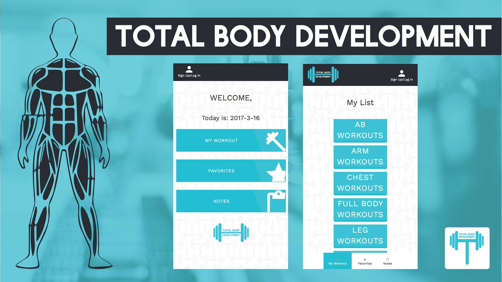

What I've Been Up To

Total Body Development A webapp I made with three other classmates for Scott Klemmer's COGS 120 course at UCSD. It was inspired by our personal experiences with workout apps in general and its inability to address the gym's high learning curve. TBD is an easily accessible platform where beginners can feel comfortable in managing their own routines without feeling overwhelmed. Try it out Total Body Development Link. Github

Triton Bites An individual project for other students in UCSD inspired by the difficulty of obtaining the daily menu and a curious desire to learn how to develop apps. Triton Bites utilizes the JSOUP library and the Google Maps API to display the UCSD dining hall menu information in a simple and effective way. I developed and designed the app individually with Material Design in mind. Currently in development and on the Google Play Store. Triton Bites Play Store Link.